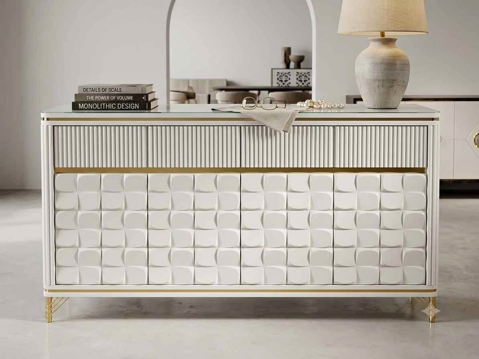

If you have stepped into any contemporary home in Delhi, Gurugram, or Noida recently, you have likely noticed a major shift: the era of flat, uninspired laminate buffets is over. In their place, architectural fluted sideboards—featuring vertical grooves, fluted glass, and metallic gold accents—have become the visual centerpiece of modern living and dining spaces.
1. What Makes Fluted Furniture So Captivating?
Fluting refers to the vertical ridges or grooves routed into the surface of the wood or HDMR panels. In architecture, fluting has roots in classical Roman and Greek pillars. When brought into furniture:
- Light & Shadow: As natural room lighting shifts throughout the day, the vertical ridges cast subtle shadows, giving the furniture depth that flat laminates can never achieve.
- Tactile Luxury: Running your hand across precision CNC-routed fluting finished with multi-coat PU polish feels distinctly bespoke.
- Visual Height: The vertical lines draw the eye upward, making apartments with standard 9.5-foot ceilings feel airier and more spacious.
Premium Fluted Sideboard & Glass Showcase
5 × 3 Feet • Crisp White & Gold Accents • Toughened Tinted Glass Display • 5-Year PU Polish Warranty
2. The Sizing Formula: 5-Foot vs. 6-Foot Sideboards
The number one mistake homeowners make when shopping at retail showrooms is buying a console that is too deep or mismatched with wall length. Here is the sizing rule we use in our Delhi factory:
| Room Wall Width | Ideal Console Length | Recommended Depth | Best Configuration |
|---|---|---|---|
| 7 – 9 Feet | 4.5 to 5 Feet | 15 – 16 Inches | 2 Fluted doors + Center glass display |
| 10 – 14 Feet | 5.5 to 6.5 Feet | 16 – 18 Inches | 3-4 Fluted doors + Built-in cutlery drawers |
| 15+ Feet / Penthouse | 7 to 8 Feet (Custom) | 18 – 20 Inches | Integrated LED bar & wine stemware holder |
3. Why Factory-Direct Costs 40-50% Less Than Showrooms
When you walk into a luxury furniture showroom on MG Road or Kirti Nagar, the ₹60,000–₹85,000 price tag on a fluted console doesn't reflect the cost of materials. Over 50% of that price goes directly toward:
- Prime commercial real estate rents and air conditioning
- Sales rep commissions and interior designer kickbacks
- Showroom inventory holding costs and middleman markups
At Factory Finish Furniture, our workshop operates out of Delhi NCR. You communicate directly with workshop owner Manish Prasad, customize your dimensions down to the centimeter, pick your exact PU shade, and get the piece delivered to your doorstep without retail inflation.

Architectural 3D Textured Sideboard
5 × 3 Feet • Sculpted Geometric Facade • Soft-Close Heavy Hardware • High-Gloss White & Gold
Inquire on WhatsApp4. How to Order a Custom Fluted Sideboard
- Measure your space: Note the length of your dining or living room wall and check for electrical outlet positions.
- Send a WhatsApp photo: Take a quick photo of your wall and send it to Manish at +91 88262 36138.
- Select your shade & glass: Choose between warm white, charcoal black, sage green, or any Asian Paints shade, paired with tinted bronze or fluted glass.
- Direct delivery & placement: Your unit is crated in custom wooden frames and delivered directly to your home with transit protection.